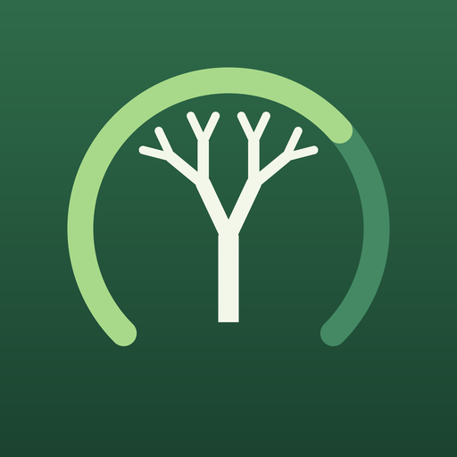
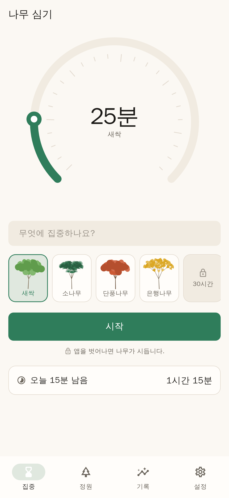
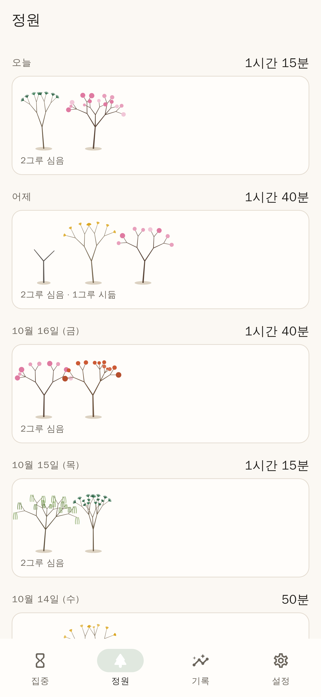
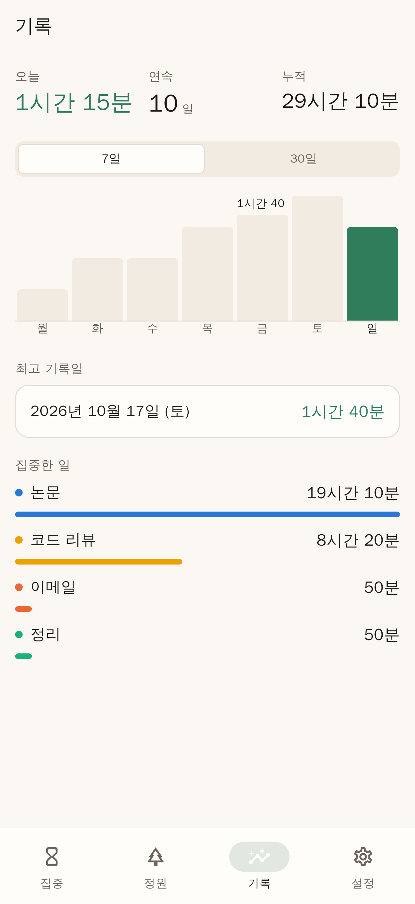
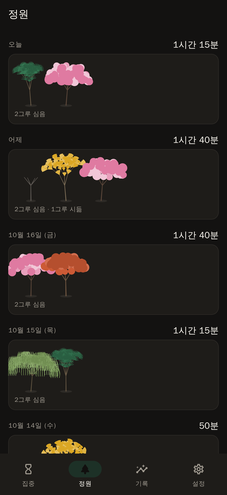

그로브 Grove집중 타이머 · iOS
타이머를 맞추면 나무가 자랍니다. 끝까지 하면 정원에 영구히 남고, 중간에 그만두면 시들어 그루터기로 남습니다. 구독 없이 한 번만 결제합니다.
계정도, 로그인도, 광고도 없습니다. 앱 안에 네트워크 코드 자체가 없어서, 기록이 나갈 곳이 없습니다.
출시 준비 중 · 아직 App Store에 없습니다25분을 끝내면 이 나무가 정원에 남습니다.
미리보기라서 빠르게 돌아갑니다. 실제 세션은 맞춘 시간만큼 걸립니다.
규칙
중단한 세션은 아무것도 주지 않습니다. 수종 해금도, 연속 기록도, 누적 시간도 완료한 세션만 셉니다. 절반쯤 하다 그만둔 것을 절반의 성취로 쳐주는 앱은 결국 아무것도 끝내지 않게 만듭니다.
줄기가 먼저 서고, 가지가 세대별로 갈라지고, 마지막에 잎이 납니다. 몇 분마다 눈에 띄게 달라지도록 단계를 나눠 놨습니다.
정원에 영구히 남습니다. 누적 시간에 더해지고, 연속 기록이 이어지고, 다음 수종에 가까워집니다.
시들어 그루터기로 남습니다. 지워 주지 않습니다. 지워 주지 않는 쪽이 정직하고, 보고 있으면 다음 세션을 끝내게 됩니다.
엄격 모드
집중 중에 앱을 벗어나는 순간 나무가 죽습니다. 다만 20초 이내의 짧은 이탈은 봐 줍니다. iOS는 전화나 시스템 알림으로 앱을 가릴 수 있고, 그것 때문에 50분을 잃는 건 부당합니다.
앱을 벗어나도 타이머는 계속 돌아갑니다. 어느 쪽이 맞는지는 그날 하는 일에 따라 다르므로, 둘 다 있습니다.
세션은 시작하는 순간 디스크에 기록됩니다. 앱을 강제 종료하는 것이 시든 나무를 피하는 가장 싼 방법이 되면, 그건 더 이상 약속이 아닙니다.
화면을 끄고 폰을 엎어 둬도 됩니다. 앱이 화면에 없는 동안 세션이 끝나면 알림이 옵니다. 보고 있을 때는 보내지 않습니다. 카운트다운이 이미 말해 주니까요.
수종
그려 둔 그림이 아니라 매번 계산해서 그립니다. 같은 수종이라도 심을 때마다 가지가 다르게 갈라집니다. 누적 집중 시간으로 해금됩니다. 눌러 보면 위 미리보기에 그 나무가 심어집니다.
화면




값
집중하는 습관을 들이려고 매달 돈이 빠져나가는 앱을 쓰는 것은 앞뒤가 맞지 않습니다. 가격은 ₩1,500 예정이고, 그게 전부입니다. 앱 내 구매도, 광고도, 프리미엄 등급도 없습니다.
“수집하지 않습니다”가 아니라, 앱 안에 네트워크 코드 자체가 없습니다. 계정도, 로그인도, 랭킹도, 친구 목록도 없습니다. 비행기 모드에서 똑같이 동작합니다.
친구와 같이 집중하기, 순위표, 나무 심기 기부 연동은 없습니다. 전부 서버와 계정이 필요한 다른 종류의 앱입니다. 이건 혼자 쓰는 타이머이고, 그래서 아무것도 요구하지 않습니다.
상태
아직 App Store에 올라가 있지 않습니다. 이 페이지에 적힌 것 중 지어낸 기능은 없지만, 아직 사람이 쓴 적도 없습니다.
| 앱 본체 | 테스트 106개 통과 | 완료 |
|---|---|---|
| 아이콘 · 개인정보 매니페스트 | iOS 전 사이즈, Android 적응형 아이콘 | 완료 |
| 스토어 문구 · 스크린샷 | 한국어 / English, 기기 해상도 골든 파일 | 완료 |
| iOS · Android 빌드 | CI에서 두 플랫폼 모두 컴파일 | 완료 |
| Apple 개발자 계정 | 연 $99 | 남음 |
| 서명 · 실기기 확인 | 알림이 실제로 뜨는지는 폰에서만 확인됩니다 | 남음 |
| 심사 제출 | 남음 |
개인정보